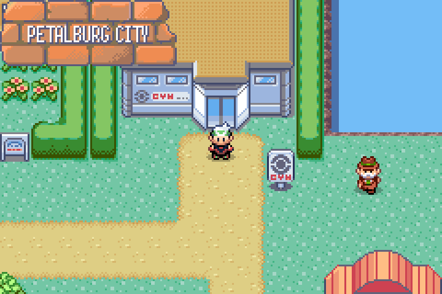
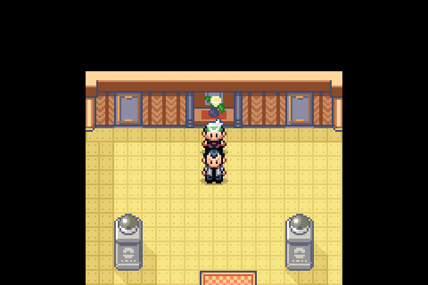

OFFICIAL FIELD GUIDE
keep one berry from each harvest and plant the other. Soil in Hoenn is generous, and the trees you leave behind keep producing while you are away.
Petalburg is where the road stops feeling like a tutorial: two visible pickups, a hidden one, and a Mart wider than anything you have seen.
TIP
Read the route signs before you leave a map. They list the
local Pokémon by grass, water and fishing method, and they keep going past the
fishing list to name the legendaries living nearby.
Petalburg City
Move Needed: HM03 (Surf) for the western pond
The largest township yet, and the first with a Gym you cannot enter.
Norman will not battle his own child until four badges are on the case.
Stop in anyway: the conversation opens the route west, and the Mart
stocks the specialist Poké Balls the woods north of town reward.
ITEMS
- Max Revive
- Ether
- Ultra Ball (hidden)
NEARBY
- Scolipite (Petalburg Woods)

Petalburg City, at the Gym door
POKÉMART
| ITEM | PRICE |
|---|---|
| Poké Ball | ₽100 |
| Potion | ₽200 |
| Antidote | ₽200 |
| Paralyze Heal | ₽200 |
| Awakening | ₽200 |
| Heal Ball | ₽600 |
| Net Ball | ₽600 |
| Nest Ball | ₽600 |
POKÉMON APPEARANCES IN WATER
| POKÉMON | METHOD | LEVELS | POKÉMON | METHOD | LEVELS |
|---|---|---|---|---|---|
| Marill | Surfing | 50–55 | Magikarp | Old Rod | 15–20 |
| Lotad | Surfing | 50–55 | Barboach | Good Rod | 25–30 |
| Poliwag | Surfing | 50–55 | Corphish | Good Rod | 25–30 |
| Wooper | Surfing | 50–55 | Azumarill | Super Rod | 55–60 |
| Corphish | Surfing | 50–55 | Ludicolo | Super Rod | 55–60 |
| Whiscash | Super Rod | 55–60 | Politoed | Super Rod | 55–60 |
Event 1: Visit the Gym

The challenge hall runs the length of the Gym
Your father runs the Gym in Petalburg, so stop there as soon as you reach town. You will compete at every Gym in Hoenn, but Norman will not battle you until four badges are on your case. He sends you west with encouragement and a pointer toward the woods.
Come back the moment the fourth badge is yours. Norman is one of the hardest fights in the middle of the campaign.
24